28/09/2025 — Đau ngực cấp, 2 năm liền nhau
Bản dịch tiếng Việt của bài "Acute Chest pain, 2 years in a row." – Dr. Smith’s ECG Blog. Giữ nguyên toàn bộ 11 hình ảnh của bản gốc.

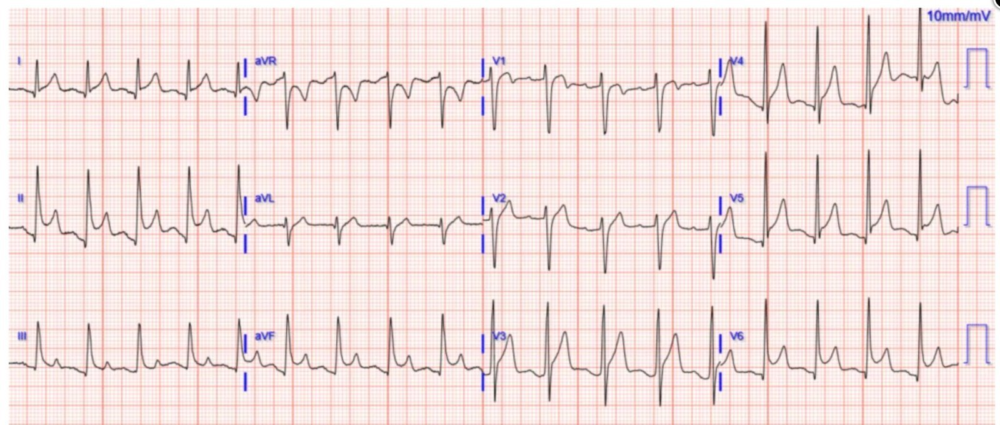
Một người đàn ông ở độ tuổi 30 đến khám vì các triệu chứng tương tự nhau (đau ngực cấp sau xương ức) hai lần, mỗi lần cách nhau một năm.
Lần khám #1
Bệnh sử gồm đau ngực cấp sau xương ức, khó thở và vã mồ hôi, khởi phát trong vòng 3 giờ. Béo phì nhưng không có yếu tố nguy cơ tim mạch nào khác. Dấu hiệu sinh tồn trong giới hạn bình thường.
Điện tâm đồ:

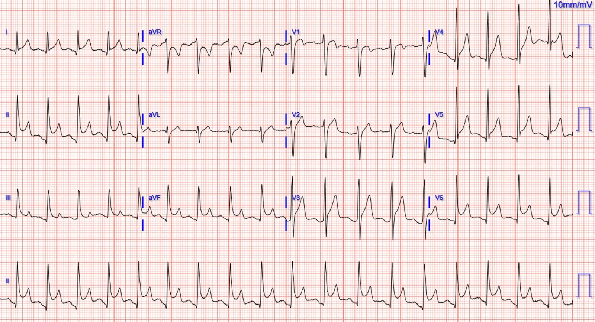
Bạn nghĩ gì?
Meyers: Nhiều chuyển đạo có ST chênh lên (STE), đạt tiêu chuẩn STEMI, nhưng sóng T không tối cấp, hình thái ST lành tính, có dấu hiệu Spodick và một ít đoạn PR chênh xuống. Chẩn đoán phân biệt là viêm màng ngoài tim với biến thể bình thường. Không có dấu hiệu của OMI. Lưu ý rằng về mặt toán học aVR bắt buộc phải có ST chênh xuống, vì nhiều chuyển đạo hướng sang trái/xuống dưới có STE.
Smith: Tôi nghĩ điều quan trọng nhất là STE ở II cao hơn nhiều so với ở III VÀ không có ST chênh xuống (STD) soi gương ở aVL. Nghiên cứu của chúng tôi cho thấy không có bệnh nhân viêm màng ngoài tim nào có STD soi gương ở bất kỳ chuyển đạo nào ngoài aVR, VÀ 99% trường hợp OMI thành dưới có một mức STD nào đó (thường là rất nhỏ) ở aVL. Vì vậy, dù tôi thường viết rằng “chẩn đoán viêm màng ngoài tim là tự chuốc lấy rủi ro”, trong ca này gần như chắc chắn không phải OMI.
Bischof JE, Worrall C, Thompson P, Marti D, Smith SW. ST depression in lead aVL differentiates inferior ST-elevation myocardial infarction from pericarditis (ST chênh xuống ở chuyển đạo aVL giúp phân biệt nhồi máu cơ tim ST chênh lên thành dưới với viêm màng ngoài tim). Am J Emerg Med [Internet] 2016;34(2):149–54. Truy cập tại: http://dx.doi.org/10.1016/j.ajem.2015.09.035
Kết quả đọc của Queen of Hearts:

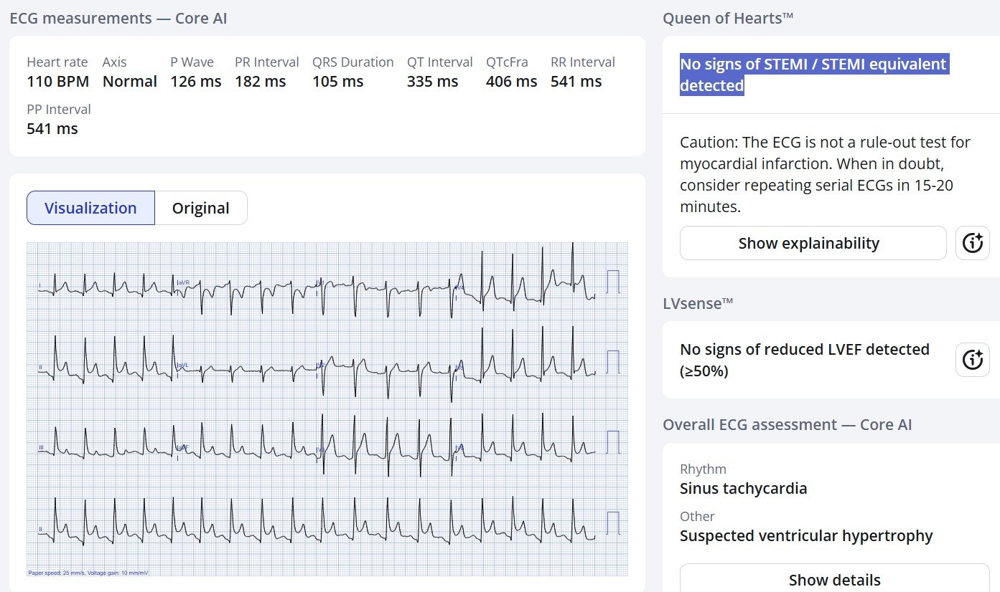
Ứng dụng PMcardio for Individuals 3.0 mới nay đã tích hợp mô hình Queen of Hearts mới nhất và khả năng giải thích của AI (bản đồ nhiệt màu xanh lam)! Tải ngay cho iOS hoặc Android. https://www.powerfulmedical.com/pmcardio-individuals/
Đã kích hoạt báo động STEMI (Code STEMI), chụp mạch vành cấp cứu: động mạch vành bình thường
Troponin I độ nhạy cao đo liên tiếp:
<6, 13, 15, 19, 14, (không đo thêm)
Tốc độ máu lắng (ESR) tăng ở mức 30 mm/giờ, CRP tăng ở mức 6.1 mg/dL
Điện tâm đồ ghi lại:

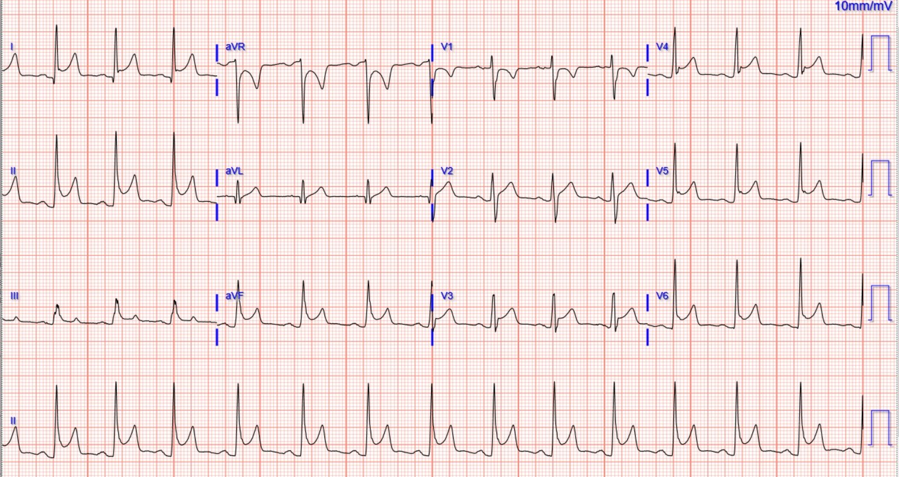
Kết quả đọc của Queen of Hearts:

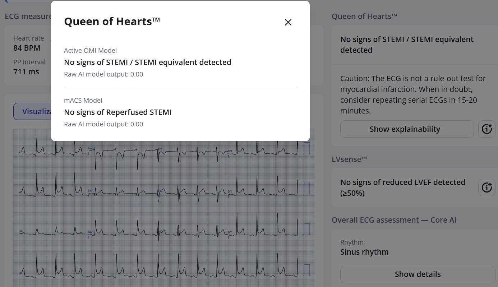
Ở chế độ xem này bạn có thể thấy điểm số thô (từ 0 đến 1.0, trong đó 0 là mức chắc chắn cao nhất có thể rằng KHÔNG phải OMI, và 1.0 là mức chắc chắn cao nhất có thể rằng CÓ OMI). Điện tâm đồ này có điểm số 0.00, tức là tự tin ở mức tối đa rằng không có dấu hiệu OMI trên điện tâm đồ, dù có nhiều STE và đạt tiêu chuẩn STEMI rõ ràng.
Siêu âm tim không có rối loạn vận động thành, EF bình thường và không có tràn dịch màng ngoài tim.
MRI tim cho thấy:
- Không có ngấm thuốc muộn gadolinium ở cơ tim gợi ý nhồi máu hay viêm
- LVEF bình thường
- “Ngấm thuốc muộn màng ngoài tim dạng mảng cạnh thành tự do thất trái, kèm tín hiệu T1 và T2 bất thường, phù hợp với viêm màng ngoài tim cấp”
Lần khám #2
Bệnh sử ghi trong phần bệnh sử hiện tại (HPI) gần như y hệt lần khám 1 ở trên.
Điện tâm đồ:

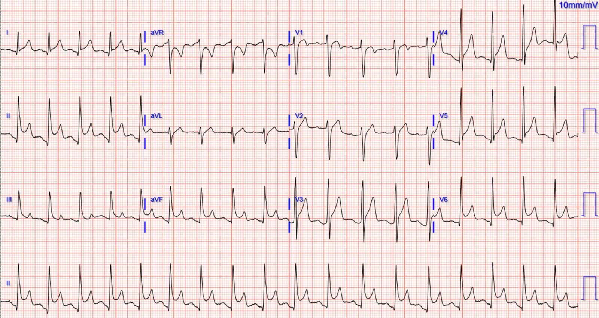
Queen of Hearts đọc:

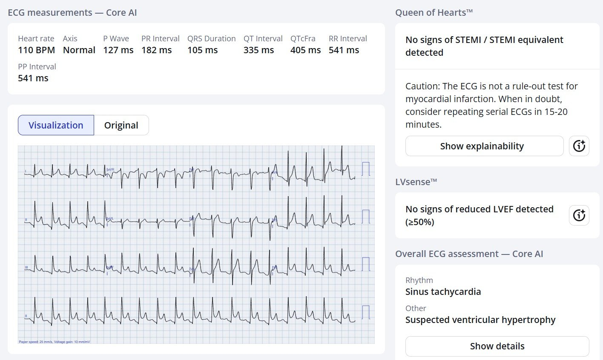
Đã kích hoạt báo động STEMI (Code STEMI), chụp mạch vành cấp cứu: động mạch vành bình thường
Troponin I độ nhạy cao đo liên tiếp: <6, <6, <6; (không đo thêm)
Tốc độ máu lắng (ESR) tăng ở mức 33 mm/giờ, CRP tăng 8.7 mg/dL
Điện tâm đồ ghi lại:

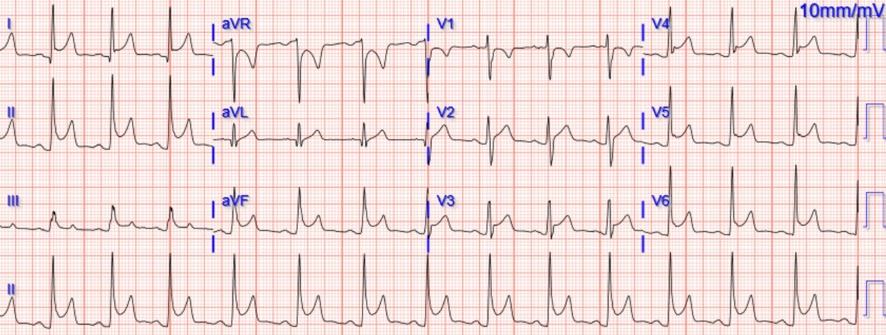
Queen of Hearts đọc:

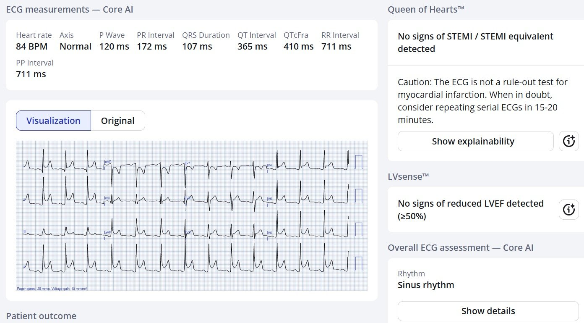
Siêu âm tim: không có rối loạn vận động thành và EF bình thường. Có tràn dịch màng ngoài tim lượng vừa.
MRI tim trong lần khám này cho thấy:
- Không có ngấm thuốc muộn gadolinium ở cơ tim gợi ý nhồi máu hay viêm
- LVEF bình thường
- “Tràn dịch màng ngoài tim lượng vừa, phân bố toàn chu vi, dày tới 1.8 cm ở phía dưới thất phải và 1.2 cm ở phía bên thất trái. Dịch là dịch thấm với thời gian T1 trong khoảng 3100-3200 ms. Không có dấu hiệu tăng áp lực trong khoang màng ngoài tim. Có ngấm thuốc muộn gadolinium ở màng ngoài tim cạnh thành trước từ đoạn đáy đến đoạn giữa và phía trước mỏm, phù hợp với viêm/viêm màng ngoài tim cấp.”
Điện tâm đồ 4 ngày sau:

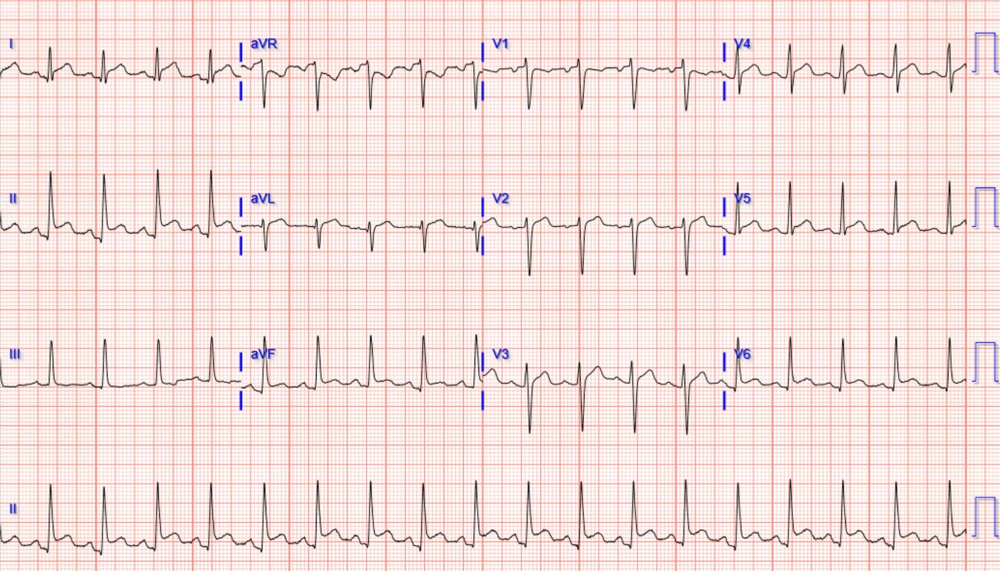
Queen of Hearts đọc:

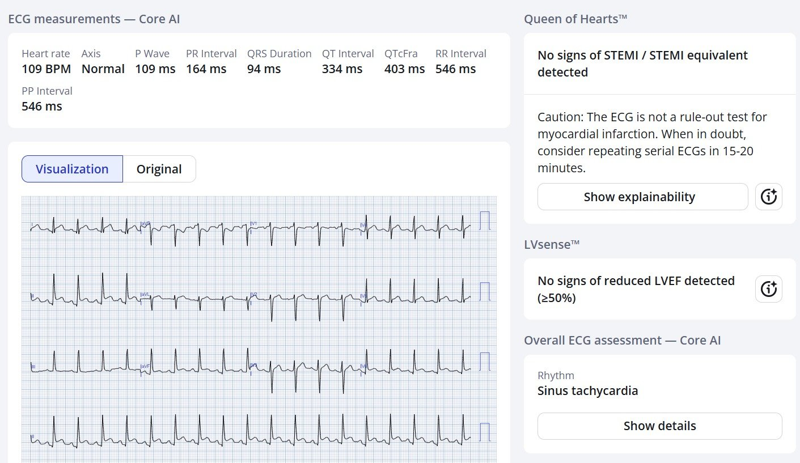
Bệnh nhân được điều trị tốt cho đợt viêm màng ngoài tim tái phát.
Những điểm cần học:
Đây là một ca viêm màng ngoài tim, không phải OMI. Viêm màng ngoài tim có tồn tại, nhưng hiếm hơn nhiều so với OMI. Xin đừng bao giờ chẩn đoán nhầm OMI thành viêm màng ngoài tim. Tác hại của một ca OMI bị bỏ sót lớn hơn nhiều so với nhiều ca chụp mạch vành không cần thiết và không biến chứng.
Bất kỳ ai cũng có thể trở thành chuyên gia điện tâm đồ nhờ thực hành có hướng dẫn và đối chiếu với kết cục thực tế của bệnh nhân (chứ không chỉ chẩn đoán cuối cùng ghi trong cơ sở dữ liệu chỉ số STEMI!). Chúng tôi đã cung cấp nội dung giáo dục này trên blog từ năm 2008, hoàn toàn miễn phí, và sẽ luôn tiếp tục như vậy.
Nếu bạn không có thời gian hoặc mong muốn trở thành chuyên gia để chăm sóc tối ưu cho những bệnh nhân này và bệnh nhân OMI, hãy cân nhắc sử dụng một mô hình AI đọc điện tâm đồ được huấn luyện cho mục đích này. Queen of Hearts do chúng tôi phát triển, và cho đến nay là tốt nhất, vượt xa các mô hình khác. Nếu một ngày nào đó xuất hiện đối thủ cạnh tranh và làm tốt hơn, thì điều đó còn tốt hơn nữa cho bệnh nhân!
Smith: Tôi đã giảng dạy chẩn đoán nhồi máu cơ tim bằng điện tâm đồ trong 37 năm. Sau tất cả kinh nghiệm đó, tôi tin rằng rất ít nhân viên y tế có đủ mọi phẩm chất cần thiết để trở thành chuyên gia điện tâm đồ thực thụ. Một số người có thể học được chuyên môn này ở một mức độ nào đó, nhưng với phần lớn mọi người, ngay cả khi học tập chuyên tâm, vẫn không thể đạt tới. Một người học như vậy cần:
1. Động lực
2. Thời gian
3. Năng khiếu thị giác bẩm sinh (hiếm có) để “nhìn ra” những khác biệt và tương đồng giữa các dạng sóng.
Vì vậy, tôi tin rằng mô hình AI PMCardio Queen of Hearts là thứ tuyệt đối cần thiết để chăm sóc tốt bệnh nhân đau ngực.
Ví dụ: Tại hội nghị TCT ở San Francisco vào cuối tháng Mười, chúng tôi sẽ trình bày một nghiên cứu trên hơn 1000 ca kích hoạt STEMI và cho thấy rằng việc dùng Queen of Hearts trên điện tâm đồ ban đầu lẽ ra đã 1) giảm tỷ lệ kích hoạt dương tính giả từ 41% xuống 7% và 2) giúp kích hoạt sớm hơn cho 2/3 trong số 30% bệnh nhân không được kích hoạt ở điện tâm đồ đầu tiên.
= = =
======================================
BÌNH LUẬN CỦA TÔI, bởi KEN GRAUER, MD (28/9/2025):
Ca hôm nay của Dr. Meyers làm nổi bật một số điểm quan trọng liên quan đến chẩn đoán và nguy cơ chẩn đoán nhầm viêm màng ngoài tim cấp là nguyên nhân gây CP mới xuất hiện (Chest Pain – đau ngực) ở những bệnh nhân đến khám cấp cứu.
- Vấn đề thứ 1 ở khía cạnh này liên quan đến thách thức trong việc đánh giá tỷ lệ mắc thực sự của viêm màng ngoài tim cấp (tức là viêm màng ngoài tim không kèm viêm cơ tim) trong bối cảnh cấp cứu. Dù được trích dẫn là chiếm ~5% tổng số ca nhập khoa cấp cứu (ED) vì CP cấp (Andreis và cs. — Intern Emerg Med 16(3):551-558, 2021 — và — Dababneh và Siddique — StatPearls, 2025) — kinh nghiệm của chúng tôi cho thấy tỷ lệ mắc thực sự của viêm màng ngoài tim cấp chiếm một tỷ lệ phần trăm số ca nhập ED thấp hơn đáng kể so với con số này.
- Thay vào đó, như chúng tôi thường xuyên cảnh báo trên Dr. Smith’s ECG Blog — viêm màng ngoài tim cấp có xu hướng bị chẩn đoán quá mức rất nhiều (quá thường xuyên dường như là chẩn đoán theo mặc định, bằng cách áp dụng một loạt tiêu chuẩn điện tâm đồ không hoàn hảo). Do đó, khi đứng trước một ca gợi ý viêm màng ngoài tim cấp — tôi thấy mình nhắc lại câu thần chú đã thấm vào tôi nhờ sự sáng suốt của Dr. Meyers và Dr. Smith, “Ở bệnh nhân có CP mới xuất hiện — chẩn đoán viêm màng ngoài tim cấp là tự chuốc lấy rủi ro” (đơn giản vì trong bối cảnh cấp cứu — một hội chứng tim cấp về mặt thống kê sẽ phổ biến hơn nhiều so với viêm màng ngoài tim cấp).
- Dù vậy — ca hôm nay minh họa rằng viêm màng ngoài tim cấp đơn thuần vẫn thỉnh thoảng xảy ra.
- ĐIỂM THEN CHỐT (PEARL): Việc bệnh nhân hôm nay đến khám 1 năm sau đợt viêm màng ngoài tim cấp đầu tiên với bệnh sử lâm sàng gần như y hệt — lẽ ra phải là một manh mối lớn rằng lần khám thứ 2 của anh ấy là một đợt tái phát viêm màng ngoài tim cấp. Có tới 30% bệnh nhân bị một đợt viêm màng ngoài tim cấp vô căn ban đầu sẽ có ≥1 đợt bổ sung ( = viêm màng ngoài tim tái phát).
- LƯU Ý: Viêm cơ tim cấp (bao gồm viêm cơ-màng ngoài tim cấp) là một chẩn đoán không khó nắm bắt bằng viêm màng ngoài tim cấp đơn thuần — vì khác với viêm màng ngoài tim đơn thuần, Troponin huyết thanh thường tăng (thường tăng đáng kể) trong viêm cơ tim. Như chúng tôi đã trình bày trong nhiều ca trên Dr. Smith’s ECG Blog — đôi khi có thể cần thông tim để phân biệt giữa OMI cấp với viêm cơ tim cấp.
= = =
Điện tâm đồ ban đầu của ca hôm nay:
Với nhận thức rằng OMI cấp là nguyên nhân gây CP cấp đến ED phổ biến hơn nhiều so với viêm màng ngoài tim cấp — tôi thấy rằng trong tất cả các điện tâm đồ ban đầu tôi đã xem suốt một thập kỷ theo dõi mọi ca trên Dr. Smith’s ECG Blog — điện tâm đồ ban đầu (mà tôi đã sao lại và đánh dấu trong Hình 1) của ca hôm nay khớp với “mô tả kinh điển trong sách giáo khoa” về hình ảnh điện tâm đồ của viêm màng ngoài tim cấp không kém bất kỳ điện tâm đồ nào khác mà tôi từng thấy.
- Tôi trình bày “Quan điểm của tôi” về chẩn đoán viêm màng ngoài tim cấp bằng điện tâm đồ trong Bình luận của tôi ở bài ngày 16 tháng Năm năm 2023 trên Dr. Smith’s ECG Blog (kèm một bản tóm tắt PDF 9 trang).
- Để hiểu thêm về chẩn đoán viêm màng ngoài tim cấp bằng điện tâm đồ trong một ca khó — Xem Bình luận của tôi ở bài ngày 15 tháng Sáu năm 2025 .
Các dấu hiệu điện tâm đồ trong Hình 1 gợi ý viêm màng ngoài tim cấp:
- ST chênh lên lan tỏa (ở đây thấy trong 9/12 chuyển đạo! = các mũi tên ĐỎ ).
- Đoạn PR chênh xuống ở nhiều chuyển đạo — kèm đoạn PR chênh lên ở aVR (các mũi tên XANH LAM ở những chuyển đạo này).
- Hình dạng ST-T ở chuyển đạo II giống chuyển đạo I (hơn là giống chuyển đạo III — trong khi với OMI cấp, chuyển đạo II giống chuyển đạo III).
- Khác với nhồi máu cơ tim cấp — trong viêm màng ngoài tim cấp: i) Không có ST chênh xuống soi gương; ii) Không có sóng Q nhồi máu (Các sóng q thấy trong Hình 1 có kích thước nhỏ và hẹp — phù hợp với sóng q “vách” bình thường); iii) Tăng tiến sóng R bình thường (trong khi nhồi máu cơ tim thành trước thường làm mất sóng R ở các chuyển đạo trước); và iv) Hình dạng của ST-T chênh lên là dốc lên (dạng “mặt cười”) — trái ngược với ST dạng vòm (coving) thường gặp hơn trong OMI cấp.
- Tỷ số ST/sóng T ở chuyển đạo V6 >0.25 (hoặc ít nhất có vẻ như tỷ số này >0.25 — điều này hơi khó đánh giá do có đoạn PR chênh xuống ở chuyển đạo V6).
- Có dấu hiệu Spodick (đoạn TP [hoặc toàn bộ đoạn QRS-TP] dốc xuống, có thể thấy ở một số chuyển đạo trong viêm màng ngoài tim cấp = đường chấm ĐỎ nghiêng xuống ở chuyển đạo V5).
= = =
Hình 1: Tôi đã đánh dấu điện tâm đồ ban đầu của ca hôm nay.

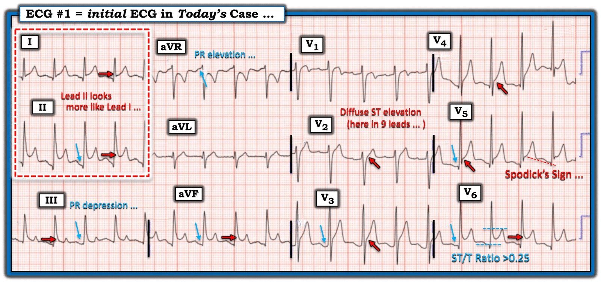
Những cân nhắc lâm sàng bổ sung:
Tôi sẽ nêu bật một số điểm lâm sàng chọn lọc đáng chú ý liên quan đến chẩn đoán viêm màng ngoài tim cấp (dựa trên các bài báo của Andreis và của Dababneh/Siddique mà tôi trích dẫn ở trên):
- Các nguyên nhân tiềm tàng của viêm màng ngoài tim cấp rất nhiều (bao gồm nhiễm vi khuẩn, virus, nấm — bệnh ác tính — bệnh mô liên kết — các tình trạng chuyển hóa (urê máu cao; phù niêm) — chấn thương màng ngoài tim; — sau nhồi máu cơ tim (hội chứng Dressler) — các bệnh thâm nhiễm (amyloidosis; sarcoidosis — và các nguyên nhân khác).
- Dù vậy — trong tới 90% trường hợp, không tìm thấy nguyên nhân rõ ràng của viêm màng ngoài tim cấp — khi đó bệnh được xếp loại là viêm màng ngoài tim cấp “vô căn“ (idiopathic).
- Vì trong viêm màng ngoài tim cấp vô căn rất thường gặp tình trạng không tìm được nguyên nhân xác định — hiếm khi cần đánh giá chẩn đoán rộng rãi, trừ khi có nghi ngờ một nguyên nhân cụ thể.
- Các phương pháp điều trị viêm màng ngoài tim cấp có thể gồm: i) NSAID; ii) Colchicine (nhờ tác dụng kháng viêm); iii) Corticosteroid; và iv) Các thuốc kháng viêm khác (với các liệu pháp mới hơn gồm thuốc kháng interleukin-1 [IL-1], hứa hẹn kiểm soát hiệu quả hơn viêm màng ngoài tim tái phát — Kumar và cs. — ACC: Latest in Card, 2023).
- Như đã đề cập ở trên — tỷ lệ chung của viêm màng ngoài tim vô căn tái phát được trích dẫn trong y văn là khoảng 15-30% số trường hợp. Đáng chú ý — điều trị bệnh nhân bằng corticosteroid giúp triệu chứng thuyên giảm nhanh hơn, nhưng đi kèm tỷ lệ tái phát cao hơn nhiều. Ngược lại — dùng colchicine thay cho corticosteroid đi kèm tỷ lệ tái phát thấp hơn nhiều (colchicine thường được phối hợp với NSAID, và việc điều trị thường kéo dài 6-12 tháng). Hy vọng rằng các thuốc kháng interleukin-1 mới hơn sẽ còn hiệu quả hơn nữa trong phòng ngừa tái phát.
- LƯU Ý #1: Bệnh sử của ca hôm nay không đề cập liệu có (hay không có) tiếng cọ màng ngoài tim. Điều này thật đáng tiếc (nhưng lại quá phổ biến trong các ca tôi thường thấy đăng trên internet) — vì NẾU nghe thấy tiếng cọ màng ngoài tim, thì bạn đã có chẩn đoán viêm màng ngoài tim cấp! (và có lẽ đã tránh được việc thông tim không cần thiết ở cả hai lần bệnh nhân hôm nay đến khám vì viêm màng ngoài tim cấp).
- LƯU Ý #2: Không có đề cập nào về việc CP của bệnh nhân này có liên quan đến tư thế hay có tính chất kiểu màng phổi hay không (thay vào đó CP được mô tả là “sau xương ức”, kèm khó thở và vã mồ hôi). Mặc dù mô tả của bệnh nhân về tính chất CP theo định nghĩa là chủ quan (tương quan không hoàn hảo với mô tả kinh điển về đau do màng ngoài tim) — CP do viêm màng ngoài tim có xu hướng “kiểu màng phổi” (tăng khi hít vào do thường kèm viêm màng phổi) — và “liên quan tư thế” (thường giảm khi ngồi dậy và nặng lên khi nằm ngửa, tư thế làm tăng “căng kéo” lên màng ngoài tim đang viêm).